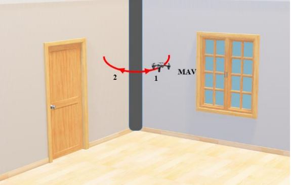

Back
|
1Department of Mechanical Engineering, Auburn University, 354 War Eagle Way, Auburn, 36849, AL, USA
2College of Computing, Georgia Institute of Technology, 801 AtlanticDr, Atlanta, 30332, GA, USA 3Department of Materials Engineering, Auburn University, 275 Wilmore Labs, Auburn, 36849, AL, USA Journal of Manufacturing Processes, 2024
Additively manufactured (AMed) components often contain volumetric defects that significantly impact mechanical and fatigue properties across various material systems. Nano-resolution X-ray computed tomography (XCT) provides precise imaging of these defects, however, XCT software struggles to differentiate between types of defects (e.g., lack of fusion, gas-entrapped pores, and keyhole), each with distinct effects on mechanical properties. To address this problem, we introduce VolDefSegNet, an automated framework based on convolutional neural networks (CNNs), for semantic segmentation of common volumetric defects in AMed components. VolDefSegNet incorporates deep learning techniques and leverages seven defect features for automated defect labeling, enhancing robustness and generalization. We trained VolDefSegNet on a comprehensive dataset of approximately 90,000 labeled defects and achieved superior performance metrics (F1-score of 0.91 and IoU of 0.68) compared to alternative models. Additionally, we explored the impact of various hyperparameters on VolDefSegNet’s performance to identify optimal hyperparameters for the framework, highlighting the framework’s potential in streamlining defect classification processes despite the challenges posed by XCT machine and software.
@article{VAGHEFI2024499,
title = {Volumetric defect classification in Nano-resolution X-ray computed tomography images of laser powder bed fusion via deep learning}, journal = {Journal of Manufacturing Processes}, volume = {121}, pages = {499-511}, year = {2024}, issn = {1526-6125}, doi = {https://doi.org/10.1016/j.jmapro.2024.05.030}, url = {https://www.sciencedirect.com/science/article/pii/S1526612524004936}, author = {Ehsan Vaghefi and Seyedmehrab Hosseini and Mohsen Azimi and Andrii Shmatok and Rong Zhao and Bart Prorok and Elham Mirkoohi}, keywords = {Laser powder bed fusion, Volumetric defects, Defect classification, CNN, Deep learning}, abstract = {Additively manufactured (AMed) components often contain volumetric defects that significantly impact mechanical and fatigue properties across various material systems. Nano-resolution X-ray computed tomography (XCT) provides precise imaging of these defects, however, XCT software struggles to differentiate between types of defects (e.g., lack of fusion, gas-entrapped pores, and keyhole), each with distinct effects on mechanical properties. To address this problem, we introduce VolDefSegNet, an automated framework based on convolutional neural networks (CNNs), for semantic segmentation of common volumetric defects in AMed components. VolDefSegNet incorporates deep learning techniques and leverages seven defect features for automated defect labeling, enhancing robustness and generalization. We trained VolDefSegNet on a comprehensive dataset of approximately 90,000 labeled defects and achieved superior performance metrics (F1-score of 0.91 and IoU of 0.68) compared to alternative models. Additionally, we explored the impact of various hyperparameters on VolDefSegNet’s performance to identify optimal hyperparameters for the framework, highlighting the framework’s potential in streamlining defect classification processes despite the challenges posed by XCT machine and software.} } |
|
1Department of Civil Engineering, The University of British Columbia, Vancouver, British Columbia, Canada
Computer-Aided Civil and Infrastructure Engineering, 2024
High-resolution image segmentation is essential in structural health monitoring (SHM), enabling accurate detection and quantification of structural components and damages. However, conventional convolutional neural network-based segmentation methods face limitations in real-world deployment, particularly when handling high-resolution images producing low-resolution outputs. This study introduces a novel framework named Refined-Segment Anything Model (R-SAM) to overcome such challenges. R-SAM leverages the state-of-the-art zero-shot SAM to generate unlabeled segmentation masks, subsequently employing the DEtection Transformer model to label the instances. The key feature and contribution of the R-SAM is its refinement module, which improves the accuracy of masks generated by SAM without the need for extensive data annotations and fine-tuning. The effectiveness of the proposed framework was assessed through qualitative and quantitative analyses across diverse case studies, including multiclass segmentation, simultaneous segmentation and tracking, and 3D reconstruction. The results demonstrate that R-SAM outperforms state-of-the-art convolution neural network-based segmentation models with a mean intersection-over-union of 97% and a mean boundary accuracy of 87%. In addition, achieving high coefficients of determination in target-free tracking case studies highlights its versatility in addressing various challenges in SHM.
@article{azimi2024transformer,
author = {Azimi, M. and Yang, T. Y.}, title = {Transformer-based framework for accurate segmentation of high-resolution images in structural health monitoring}, journal = {Computer-Aided Civil and Infrastructure Engineering}, volume = {n/a}, number = {n/a}, pages = {}, doi = {https://doi.org/10.1111/mice.13211}, url = {https://onlinelibrary.wiley.com/doi/abs/10.1111/mice.13211}, eprint = {https://onlinelibrary.wiley.com/doi/pdf/10.1111/mice.13211}, abstract = {Abstract High-resolution image segmentation is essential in structural health monitoring (SHM), enabling accurate detection and quantification of structural components and damages. However, conventional convolutional neural network-based segmentation methods face limitations in real-world deployment, particularly when handling high-resolution images producing low-resolution outputs. This study introduces a novel framework named Refined-Segment Anything Model (R-SAM) to overcome such challenges. R-SAM leverages the state-of-the-art zero-shot SAM to generate unlabeled segmentation masks, subsequently employing the DEtection Transformer model to label the instances. The key feature and contribution of the R-SAM is its refinement module, which improves the accuracy of masks generated by SAM without the need for extensive data annotations and fine-tuning. The effectiveness of the proposed framework was assessed through qualitative and quantitative analyses across diverse case studies, including multiclass segmentation, simultaneous segmentation and tracking, and 3D reconstruction. The results demonstrate that R-SAM outperforms state-of-the-art convolution neural network-based segmentation models with a mean intersection-over-union of 97\% and a mean boundary accuracy of 87\%. In addition, achieving high coefficients of determination in target-free tracking case studies highlights its versatility in addressing various challenges in SHM.} } |
|
1Department of Civil Engineering, Iran University of Science and Technology, Tehran 13114-16846, Iran
2Department of Civil and Environmental Engineering, University of Nevada, Reno, NV 89557, USA Structures, 2023
In this study, two binary versions of the Water Strider Algorithm (WSA) are proposed and applied to optimal feature selection in classification problems. In the new binary versions, the formulations of WSA in continuous space are converted into binary space using group-theoretic operators (in AWSA) and sigmoid function (in BWSA). AWSA, BWSA, genetic algorithm (GA), and binary particle swarm optimization (BPSO) are selected and compared over eighteen well-known datasets from the University of California, Irvine repository. The results of AWSA indicate its satisfactory performance compared to those of other algorithms. Then, they are applied to find optimal features of a structural health monitoring classification problem using two well-known machine learning classifiers, namely k-Nearest Neighbor (KNN) and Naïve Bayes (NB) algorithms. To further improve the accuracy of the classification models, a decision-level data fusion technique is proposed based on the improved Dempster-Shafer theory. It is demonstrated that the AWSA presents superior results compared to the other algorithms and the suggested decision-level data fusion provides a reliable detection of damage.
@article{ESLAMLOU2023105280,
title = {Structural health monitoring via a group-theoretic WSA for optimal feature selection and data fusion}, journal = {Structures}, volume = {57}, pages = {105280}, year = {2023}, issn = {2352-0124}, doi = {https://doi.org/10.1016/j.istruc.2023.105280}, url = {https://www.sciencedirect.com/science/article/pii/S2352012423013681}, author = {A. Dadras Eslamlou and A. Kaveh and M. Azimi and T.Y. Yang}, keywords = {Feature selection, Algebraic WSA, Water strider algorithm, Structural health monitoring, Improved Dempster-Shafer theory}, abstract = {In this study, two binary versions of the Water Strider Algorithm (WSA) are proposed and applied to optimal feature selection in classification problems. In the new binary versions, the formulations of WSA in continuous space are converted into binary space using group-theoretic operators (in AWSA) and sigmoid function (in BWSA). AWSA, BWSA, genetic algorithm (GA), and binary particle swarm optimization (BPSO) are selected and compared over eighteen well-known datasets from the University of California, Irvine repository. The results of AWSA indicate its satisfactory performance compared to those of other algorithms. Then, they are applied to find optimal features of a structural health monitoring classification problem using two well-known machine learning classifiers, namely k-Nearest Neighbor (KNN) and Naïve Bayes (NB) algorithms. To further improve the accuracy of the classification models, a decision-level data fusion technique is proposed based on the improved Dempster-Shafer theory. It is demonstrated that the AWSA presents superior results compared to the other algorithms and the suggested decision-level data fusion provides a reliable detection of damage.} } |
|
1Centre of Excellence for Fundamental Studies in Structural Engineering, Iran University of Science and Technology, Tehran, Iran
2Department of Civil Engineering, University of British Columbia, Vancouver, BC, Canada Mechanics Based Design of Structures and Machines, 2023
As the automated fiber placement (AFP) manufacturing technology is developed, curvilinear fiber path composite structures received extensive attention. Therefore, developing a design framework capable of optimizing such structures is a significant challenge for researchers and engineers in this domain. In this article, an open-source ABAQUS/MATLAB-based framework is developed for the bending-induced buckling design of variable-stiffness (VS) composite cylinders made using the AFP method. The framework is based on an interface between ABAQUS FE packages with MATLAB environment using Python scripting language. In this framework, the optimized fiber angle distribution of steered plies and associated bending-induced buckling load of its FE model is obtained by applying a meta-heuristic optimization algorithm. The developed Python script submits dimensions, angle distributions, as well as loading and boundary conditions to ABAQUS/CAE. This framework can be customized to meet industrial demands. To show such flexibility, different types of metaheuristic optimization algorithms and aspect ratios are applied, and the associated problems are optimized separately. In addition to the simplicity and versatility of the proposed framework, the results indicate the higher performance of a novel metaheuristic, the so-called Water Strider Algorithm (WSA). Moreover, this framework can be used for finite element modeling and analysis in the metamodeling step for composite cylinders with higher aspect ratios.
@article{doi:10.1080/15397734.2020.1835489,
author = {A. Kaveh, N. Geran Malek, A. Dadras Eslamlou and M. Azimi}, title = {An open-source framework for the FE modeling and optimal design of fiber-steered variable-stiffness composite cylinders using water strider algorithm}, journal = {Mechanics Based Design of Structures and Machines}, volume = {51}, number = {1}, pages = {138--158}, year = {2023}, publisher = {Taylor \& Francis}, doi = {10.1080/15397734.2020.1835489}, URL = { https://doi.org/10.1080/15397734.2020.1835489 }, eprint = { https://doi.org/10.1080/15397734.2020.1835489 } } |
|
|
1Department of Civil and Environmental Engineering, University of Nevada, Reno, NV 89557, USA
2Department of Civil Engineering, Iran University of Science and Technology, Tehran 13114-16846, Iran Sensors, 2020
Data-driven methods in structural health monitoring (SHM) is gaining popularity due to recent technological advancements in sensors, as well as high-speed internet and cloud-based computation. Since the introduction of deep learning (DL) in civil engineering, particularly in SHM, this emerging and promising tool has attracted significant attention among researchers. The main goal of this paper is to review the latest publications in SHM using emerging DL-based methods and provide readers with an overall understanding of various SHM applications. After a brief introduction, an overview of various DL methods (e.g., deep neural networks, transfer learning, etc.) is presented. The procedure and application of vibration-based, vision-based monitoring, along with some of the recent technologies used for SHM, such as sensors, unmanned aerial vehicles (UAVs), etc. are discussed. The review concludes with prospects and potential limitations of DL-based methods in SHM applications.
@Article{s20102778, AUTHOR = {Azimi, Mohsen and Eslamlou, Armin Dadras and Pekcan, Gokhan}, TITLE = {Data-Driven Structural Health Monitoring and Damage Detection through Deep Learning: State-of-the-Art Review}, JOURNAL = {Sensors}, VOLUME = {20}, YEAR = {2020}, NUMBER = {10}, ARTICLE-NUMBER = {2778}, URL = {https://www.mdpi.com/1424-8220/20/10/2778}, PubMedID = {32414205}, ISSN = {1424-8220}, ABSTRACT = {Data-driven methods in structural health monitoring (SHM) is gaining popularity due to recent technological advancements in sensors, as well as high-speed internet and cloud-based computation. Since the introduction of deep learning (DL) in civil engineering, particularly in SHM, this emerging and promising tool has attracted significant attention among researchers. The main goal of this paper is to review the latest publications in SHM using emerging DL-based methods and provide readers with an overall understanding of various SHM applications. After a brief introduction, an overview of various DL methods (e.g., deep neural networks, transfer learning, etc.) is presented. The procedure and application of vibration-based, vision-based monitoring, along with some of the recent technologies used for SHM, such as sensors, unmanned aerial vehicles (UAVs), etc. are discussed. The review concludes with prospects and potential limitations of DL-based methods in SHM applications.}, DOI = {10.3390/s20102778} } |
|
|
1Department of Civil and Environmental Engineering, North Dakota State University, Fargo, ND 58105, USA
2Department of Electrical Engineering, University of Mohaghegh Ardabili, Ardabil 56199-11367, Iran Journal of Sensor and Actuator Networks, 2020
Seismic behavior of tall buildings depends upon the dynamic characteristics of the structure, as well as the base soil properties. To consider these factors, the equations of motion for a multi-story 3D building are developed to include irregularity and soil–structure interaction (SSI). Inspired by swarm intelligence in nature, a new control method, known as swarm-based parallel control (SPC), is proposed in this study to improve the seismic performance and minimize the pounding hazards, by sharing response data among the adjacent buildings at each floor level, using a wireless-sensors network (WSN). The response of individual buildings is investigated under historic earthquake loads, and the efficiencies of each different control method are compared. To verify the effectiveness of the proposed method, the numerical example of a 15-story, 3D building is modeled, and the responses are mitigated, using semi-actively controlled magnetorheological (MR) dampers employing the proposed control algorithm and fuzzy logic control (FLC), as well as the passive-on/off methods. The main discussion of this paper is the efficiency of the proposed SPC over the independent FLC during an event where one building is damaged or uncontrolled, and an active control based upon the linear quadratic regulator (LQR) is considered for the purpose of having a benchmark ideal result. Results indicate that in case of failure in the control system, as well as the damage in the structural elements, the proposed method can sense the damage in the building, and update the control forces in the other adjacent buildings, using the modified FLC, so as to avoid pounding by minimizing the responses.
@Article{jsan9020018, AUTHOR = {Azimi, Mohsen and Molaei Yeznabad, Asghar}, TITLE = {Swarm-based Parallel Control of Adjacent Irregular Buildings Considering Soil–structure Interaction}, JOURNAL = {Journal of Sensor and Actuator Networks}, VOLUME = {9}, YEAR = {2020}, NUMBER = {2}, ARTICLE-NUMBER = {18}, URL = {https://www.mdpi.com/2224-2708/9/2/18}, ISSN = {2224-2708}, ABSTRACT = {Seismic behavior of tall buildings depends upon the dynamic characteristics of the structure, as well as the base soil properties. To consider these factors, the equations of motion for a multi-story 3D building are developed to include irregularity and soil–structure interaction (SSI). Inspired by swarm intelligence in nature, a new control method, known as swarm-based parallel control (SPC), is proposed in this study to improve the seismic performance and minimize the pounding hazards, by sharing response data among the adjacent buildings at each floor level, using a wireless-sensors network (WSN). The response of individual buildings is investigated under historic earthquake loads, and the efficiencies of each different control method are compared. To verify the effectiveness of the proposed method, the numerical example of a 15-story, 3D building is modeled, and the responses are mitigated, using semi-actively controlled magnetorheological (MR) dampers employing the proposed control algorithm and fuzzy logic control (FLC), as well as the passive-on/off methods. The main discussion of this paper is the efficiency of the proposed SPC over the independent FLC during an event where one building is damaged or uncontrolled, and an active control based upon the linear quadratic regulator (LQR) is considered for the purpose of having a benchmark ideal result. Results indicate that in case of failure in the control system, as well as the damage in the structural elements, the proposed method can sense the damage in the building, and update the control forces in the other adjacent buildings, using the modified FLC, so as to avoid pounding by minimizing the responses.}, DOI = {10.3390/jsan9020018} } |
|
|
1Department of Civil and Environmental Engineering, University of Nevada Reno, Reno, NV, USA
Computer‐Aided Civil and Infrastructure Engineering , 2020
This study introduces a novel convolutional neural network (CNN)-based approach for structural health monitoring (SHM) that exploits a form of measured compressed response data through transfer learning (TL)-based techniques. The implementation of the proposed methodology allows damage identification and localization within a realistic large-scale system. To validate the proposed method, first, a well-known benchmark model is numerically simulated. Using acceleration response histories, as well as compressed response data in terms of discrete histograms, CNN models are trained, and the robustness of the CNN architectures is evaluated. Finally, pretrained CNNs are fine-tuned to be adaptable for three-parameter, extremely compressed response data, based on the response mean, standard deviation, and a scale factor. The performance of each CNN implementation is assessed using training accuracy histories as well as confusion matrices, along with other performance metrics. In addition to the numerical study, the performance of the proposed method is demonstrated using experimental vibration response data for verification and validation. The results indicate that deep TL can be implemented effectively for SHM of similar structural systems with different types of sensors.
@article{https://doi.org/10.1111/mice.12517,
author = {Azimi, Mohsen and Pekcan, Gokhan}, title = {Structural health monitoring using extremely compressed data through deep learning}, journal = {Computer-Aided Civil and Infrastructure Engineering}, volume = {35}, number = {6}, pages = {597-614}, doi = {https://doi.org/10.1111/mice.12517}, url = {https://onlinelibrary.wiley.com/doi/abs/10.1111/mice.12517}, eprint = {https://onlinelibrary.wiley.com/doi/pdf/10.1111/mice.12517}, abstract = {Abstract This study introduces a novel convolutional neural network (CNN)-based approach for structural health monitoring (SHM) that exploits a form of measured compressed response data through transfer learning (TL)-based techniques. The implementation of the proposed methodology allows damage identification and localization within a realistic large-scale system. To validate the proposed method, first, a well-known benchmark model is numerically simulated. Using acceleration response histories, as well as compressed response data in terms of discrete histograms, CNN models are trained, and the robustness of the CNN architectures is evaluated. Finally, pretrained CNNs are fine-tuned to be adaptable for three-parameter, extremely compressed response data, based on the response mean, standard deviation, and a scale factor. The performance of each CNN implementation is assessed using training accuracy histories as well as confusion matrices, along with other performance metrics. In addition to the numerical study, the performance of the proposed method is demonstrated using experimental vibration response data for verification and validation. The results indicate that deep TL can be implemented effectively for SHM of similar structural systems with different types of sensors.}, year = {2020} } |
|
1Department of Civil and Environmental Engineering, North Dakota State University, Fargo, North Dakota, 58105 USA
Journal of Bridge Engineering , 2018
Dynamic characteristics of cable-stayed bridges are widely accepted as valuable indicators to determine their performance in structural health monitoring (SHM). Although research has been extensively conducted in this area, such vibration-based physics methods still face great challenges in improving the effectiveness of damage identification from complex large-scale systems, particularly when other factors, including operational and environmental conditions, may cause high interference to the vibration response. Data-intensive machine learning techniques have been gaining attention due to their robustness for data classification. In this study, a framework was developed for data-driven structural diagnosis and damage detection using a support vector machine (SVM) integrated with enhanced feature extraction techniques for rapid condition assessment for large-scale cable-stayed bridges. The wavelet transform, Hilbert-Huang transform (HHT), and Teager-Huang transform (THT) were selected as three representative feature extraction methods. A kernel function-based SVM was used to facilitate the identification of damaged and undamaged cases. Numerical simulation was conducted to verify the effectiveness and accuracy of the proposed methods applied to a cable-stayed bridge. Results showed that the wavelet time-frequency analysis is more robust to noise than the HHT and THT, whereas the latter two transforms are more sensitive to capture damage/defects. Moreover, for regular signal data, the THT, due to the high time resolution, had the highest concentration and thus is the most sensitive compared with the other two methods. Parameters of interest, including impacts of damage level, damage location, sensor locations, and moving vehicle loading, are extensively discussed. All cases reveal that data-driven approaches could effectively map damage features over and under undamaged cases, dramatically enhancing the effectiveness and accuracy of data classification, which will greatly benefit in situ cable-stayed bridge assessment and management.
@article{pan2018time,
title={Time-frequency-based data-driven structural diagnosis and damage detection for cable-stayed bridges}, author={Pan, Hong and Azimi, Mohsen and Yan, Fei and Lin, Zhibin}, journal={Journal of Bridge Engineering}, volume={23}, number={6}, pages={04018033}, year={2018}, publisher={American Society of Civil Engineers} } |
|
|
1Department of Civil and Environmental Engineering, North Dakota State University, Fargo, North Dakota, 58105 USA
2Department of Civil Engineering, Sharif University of Technology, Tehran, Iran Structural Control and Health Monitoring , 2017
Much research has been conducted on structural control systems to improve the seismic performance of structures under earthquakes and, ultimately, offer high performance-resilient buildings beyond life risk mitigation. Among various structural control algorithms, semi-active control strategies have been widely accepted for overcoming some limitations existed in either passive or active control systems, thereby leading to better structural performance over their counterparts. In this study, a new semi-active control algorithm with minimum control parameters is developed to drive the hydraulic damper for effective control of the dynamic deformation of low- and high-rise building structures under earthquake loadings. The new controller allows less input and computation for determining the damping coefficient of the hydraulic dampers while maintaining a higher performance. V-braced buildings with three varying heights are used as prototypes to demonstrate the effectiveness of the proposed semi-active damper. Two critical parameters, maximum drift and acceleration of stories, are defined for the performance criteria. The simulation results show that the developed semi-active damper can significantly improve the seismic performance of the buildings in terms of controlled story drift and acceleration. By use of less input and reduced time delay effects, the proposed control system is comparable with those of existing semi-active controllers. The findings in this study will help engineers to design control systems for seismic risk mitigation and effectively facilitate the performance-based seismic design.
@article{https://doi.org/10.1002/stc.1991,
author = {Azimi, Mohsen and Rasoulnia, Akbar and Lin, Zhibin and Pan, Hong}, title = {Improved semi-active control algorithm for hydraulic damper-based braced buildings}, journal = {Structural Control and Health Monitoring}, volume = {24}, number = {11}, pages = {e1991}, keywords = {hydraulic damper, LQR, optimal control, semi-active control, V-braced building}, doi = {https://doi.org/10.1002/stc.1991}, url = {https://onlinelibrary.wiley.com/doi/abs/10.1002/stc.1991}, eprint = {https://onlinelibrary.wiley.com/doi/pdf/10.1002/stc.1991}, note = {e1991 STC-16-0154.R1}, abstract = {Summary Much research has been conducted on structural control systems to improve the seismic performance of structures under earthquakes and, ultimately, offer high performance-resilient buildings beyond life risk mitigation. Among various structural control algorithms, semi-active control strategies have been widely accepted for overcoming some limitations existed in either passive or active control systems, thereby leading to better structural performance over their counterparts. In this study, a new semi-active control algorithm with minimum control parameters is developed to drive the hydraulic damper for effective control of the dynamic deformation of low- and high-rise building structures under earthquake loadings. The new controller allows less input and computation for determining the damping coefficient of the hydraulic dampers while maintaining a higher performance. V-braced buildings with three varying heights are used as prototypes to demonstrate the effectiveness of the proposed semi-active damper. Two critical parameters, maximum drift and acceleration of stories, are defined for the performance criteria. The simulation results show that the developed semi-active damper can significantly improve the seismic performance of the buildings in terms of controlled story drift and acceleration. By use of less input and reduced time delay effects, the proposed control system is comparable with those of existing semi-active controllers. The findings in this study will help engineers to design control systems for seismic risk mitigation and effectively facilitate the performance-based seismic design.}, year = {2017} } |
|
|
1---
Applied Mechanics and Materials , 2015
Non-destructive evaluation (NDE) methods are widely accepted for quality control of welding in steel bridges. Recent development of advanced ultrasonic testing technologies enriched the categories of NDE methods used for steel bridges and more importantly these enhanced techniques provided more effective flaw detection and characterization. No guidelines, however, is available in existing bridge welding code for their more widespread applications to bridges. In this study, we overview the state-of-the-art advanced ultrasonic testing technologies in welding inspection. Benefits of the enhanced ultrasonic testing technologies are summarized, aiming to pave the way for deciding methods need for various steel bridge welding inspections.
@article{lin2015advanced,
title={Advanced ultrasonic testing technologies with applications to evaluation of steel bridge welding-an overview}, author={Lin, Zhi Bin and Azarmi, Fardad and Al-Kaseasbeh, Qusay and Azimi, Mohsen and Yan, Fei}, journal={Applied mechanics and materials}, volume={727}, pages={785--789}, year={2015}, publisher={Trans Tech Publ} } |
|
|
1Center of Excellence for Fundamental Studies in Structural Engineering, School of Civil Engineering, Iran University of Science & Technology, Tehran, Iran.
The Structural Design of Tall and Special Buildings, 2015
The present article is concerned with optimization of real size 3D steel structures under seismic loading based on response spectral and equivalent static analyses. The effect of lateral seismic loading distribution on the achieved optimum designs is investigated. An integrated optimization procedure with the objective of minimizing the self-weight of frame is simply performed interfacing SAP2000 and MATLAB® software in the form of parallel computing. The meta-heuristic algorithm chosen here is the cuckoo search (CS) algorithm recently developed as a type of population-based algorithm inspired by the behavior of some cuckoo species in combination with the Lévy flight behavior. The CS algorithm performs suitable selection of sections from the American Institute of Steel Construction (AISC) wide-flange (W) shapes list. Strength constraints of the AISC load and resistance factor design specification, geometric limitations, and displacement constraints are imposed on the considered frames. Results show similar weights for optimum designs using spectral and equivalent static analyses; however, different material distribution and seismic behaviors are observed.
@article{https://doi.org/10.1002/tal.1162,
author = {Kaveh, A. and Bakhshpoori, T. and Azimi, M.}, title = {Seismic optimal design of 3D steel frames using cuckoo search algorithm}, journal = {The Structural Design of Tall and Special Buildings}, volume = {24}, number = {3}, pages = {210-227}, keywords = {optimum design, 3D steel frame, cuckoo search algorithm, meta-heuristic, response spectral, equivalent static}, doi = {https://doi.org/10.1002/tal.1162}, url = {https://onlinelibrary.wiley.com/doi/abs/10.1002/tal.1162}, eprint = {https://onlinelibrary.wiley.com/doi/pdf/10.1002/tal.1162}, abstract = {Summary The present article is concerned with optimization of real size 3D steel structures under seismic loading based on response spectral and equivalent static analyses. The effect of lateral seismic loading distribution on the achieved optimum designs is investigated. An integrated optimization procedure with the objective of minimizing the self-weight of frame is simply performed interfacing SAP2000 and MATLAB® software in the form of parallel computing. The meta-heuristic algorithm chosen here is the cuckoo search (CS) algorithm recently developed as a type of population-based algorithm inspired by the behavior of some cuckoo species in combination with the Lévy flight behavior. The CS algorithm performs suitable selection of sections from the American Institute of Steel Construction (AISC) wide-flange (W) shapes list. Strength constraints of the AISC load and resistance factor design specification, geometric limitations, and displacement constraints are imposed on the considered frames. Results show similar weights for optimum designs using spectral and equivalent static analyses; however, different material distribution and seismic behaviors are observed. Copyright © 2014 John Wiley \& Sons, Ltd.}, year = {2015} } |
|
1Center of Excellence for Fundamental Studies in Structural Engineering, School of Civil Engineering, Iran University of Science & Technology, Tehran, Iran.
Scientia Iranica, 2013
Double-I built-up sections were extensively used in Iran according to the previous versions of Iranian building codes. Despite the recent developments in steel moment connections, based on studies for I-beam to H-shaped column connections, there are not enough documents available for I-beam to double-I built-up column connections. Recent studies have revealed that connections with double-I built-up columns exhibit different behaviors comparing to the connections with H-shaped columns. Due to excessive out-of-plane deformations of the cover plate in the non-retrofitted moment connections, they have semi-rigid behavior. The objective of this study is to build on previous studies and to investigate strain distribution pattern and load transfer mechanism in the retrofitted I-beam to double-I built-up column connections using through plates and T-stiffeners. In this paper, both horizontal and vertical elements of the T-stiffeners were modified and studied. Analytical models were designed and analyzed under cyclic and monotonic loadings. Three different indices were computed in the connection region in order to assess the local failure potential; and the moment-rotation hysteretic curves were employed to evaluate the seismic performance of the connections. With the proposed configurations, strain is uniformly distributed within the critical elements. Moreover, excessive deformations of the column cover plate are eliminated.
@article { author = {Ghodrati Amiri, Gholamreza and Azimi, Mohsen and Darvishan, Ehsan}, title = {Retrofitting I-Beam to Double-I Built-up Column Connections Using Through Plates and T-Stiffeners}, journal = {Scientia Iranica}, volume = {20}, number = {6}, pages = {1695-1707}, year = {2013}, publisher = {Sharif University of Technology}, issn = {1026-3098}, eissn = {2345-3605}, doi = {}, abstract = {Double-I built-up sections were extensively used in Iran according to the previous versions of Iranian building codes. Despite the recent developments in steel moment connections, based on studies for I-beam to H-shaped column connections, there are not enough documents available for I-beam to double-I built-up column connections. Recent studies have revealed that connections with double-I built-up columns exhibit different behaviors comparing to the connections with H-shaped columns. Due to excessive out-of-plane deformations of the cover plate in the non-retrofitted moment connections, they have semi-rigid behavior. The objective of this study is to build on previous studies and to investigate strain distribution pattern and load transfer mechanism in the retrofitted I-beam to double-I built-up column connections using through plates and T-stiffeners. In this paper, both horizontal and vertical elements of the T-stiffeners were modified and studied. Analytical models were designed and analyzed under cyclic and monotonic loadings. Three different indices were computed in the connection region in order to assess the local failure potential; and the moment-rotation hysteretic curves were employed to evaluate the seismic performance of the connections. With the proposed configurations, strain is uniformly distributed within the critical elements. Moreover, excessive deformations of the column cover plate are eliminated.}, keywords = {T-Stiffener,Double-I Built-up Section,Through Plate,Retrofitting}, url = {https://scientiairanica.sharif.edu/article_1542.html}, eprint = {https://scientiairanica.sharif.edu/article_1542_057bb56be7428bc7e22786003678de2e.pdf} } |
|  |
1Department of Civil Engineering, The University of British Columbia, Vancouver, British Columbia, Canada
Canadian Conference - Pacific Conference on Earthquake Engineering 2023, Vancouver, British Columbia, 2023
Structural columns are the crucial load-carrying components of buildings and bridges. Early detection of column damage is important for the assessment of the residual performance and the prevention of system-level collapse. This research proposes an innovative end-to-end micro aerial vehicles (MAVs)-based approach to automatically scan and inspect columns. First, an MAV-based automatic image collection method is proposed. The MAV is programmed to sense the structural columns and their surrounding environment. During the navigation, the MAV first detects and approaches the structural columns. Then, it starts to collect image data at multiple viewpoints around every detected column. Second, the collected images will be used to assess the damage types and damage locations. Third, the damage state of the structural column will be determined by fusing the evaluation outcomes from multiple camera views. In this study, reinforced concrete (RC) columns are selected to demonstrate the effectiveness of the approach. Experimental results indicate that the proposed MAV-based inspection approach can effectively collect images from multiple viewing angles, and accurately assess critical RC column damages. The approach improves the level of autonomy during the inspection. In addition, the evaluation outcomes are more comprehensive than the existing 2D vision methods. The concept of the proposed inspection approach can be extended to other structural columns such as bridge piers.
@misc{tavasoli2023autonomous,
title={Autonomous damage assessment of structural columns using low-cost micro aerial vehicles and multi-view computer vision}, author={Sina Tavasoli and Xiao Pan and T. Y. Yang and Saudah Gazi and Mohsen Azimi}, year={2023}, eprint={2308.16278}, archivePrefix={arXiv}, primaryClass={cs.CV} } |
|
1Department of Civil Engineering, The University of British Columbia, Vancouver, British Columbia, Canada
2School of Civil Engineering and Transportation, South China University of Technology, Guangzhou, China Canadian Conference - Pacific Conference on Earthquake Engineering 2023, Vancouver, British Columbia, 2023
The 2023 Türkiye–Syria earthquake caused widespread devastation with thousands of fatalities. This study aims to investigate the potential of remote-sensing methods in improving post-disaster response efforts, by leveraging advanced technologies such as satellite and aerial imagery with geospatial data, computer vision, and machine learning. These techniques include change detection through satellite image analysis, regional damage assessment, optimal path planning for multiple unmanned aerial vehicles (UAVs), and 3D reconstruction for local damage assessment. The findings of this study highlight the importance of incorporating data science and machine learning into disaster response planning, which can lead to an improved and more efficient allocation of resources, rapid decision-making in crises, and a more effective overall response. The insights generated by this study can inform the development of new disaster management strategies and the design of advanced data science tools, leading to better outcomes for communities affected by natural disasters.
|
|
1Department of Civil Engineering, The University of British Columbia, Vancouver, British Columbia, Canada
2Department of Electrical Engineering, Iran University of Science and Technology, Tehran, Iran Canadian Conference - Pacific Conference on Earthquake Engineering 2023, Vancouver, British Columbia, 2023
This paper presents a novel integrated unmanned aerial vehicle (UAV) and unmanned ground vehicle (UGV) system for structural health monitoring (SHM). In the aftermath of a disaster, efficient and accurate data collection and processing is crucial for assessing the structural integrity of buildings. However, current limitations in SHM systems include a lack of autonomy, leading to manual remote operations that are labor-intensive and time-consuming. To address that, the proposed system utilizes a wireless robot operating system (ROS) network to coordinate navigation and data collection of the UAV and UGV. Additionally, improved simultaneous localization and mapping (SLAM) algorithm is employed to generate a 2D map of the environment. High-resolution data collected by the UAV is used for 3D reconstruction at the scene and component level, making it suitable for post-earthquake assessments. The effectiveness of the proposed system was validated through experiments using a custom-built ground robot and a micro aerial vehicle for indoor inspections. Results from both qualitative and quantitative analyses demonstrate the potential for this system to enhance the efficiency and effectiveness of post-earthquake SHM and remote sensing through the use of cost-effective and portable robots.
|
|
1Department of Civil and Environmental Engineering, North Dakota State University, Fargo, ND, USA
2Department of Civil Engineering and Hydraulics, Mohamed Khider University, Biskra, Algeria Experimental Vibration Analysis for Civil Structures: Testing, Sensing, Monitoring, and Control, 2024
The active tuned mass dampers (ATMDs) are accepted as effective energy dissipating devices to effectively reduce structural dynamic response when subjected to seismic loads. The conventional design of these devices, however, may not be applicable to high-rise buildings with irregularity in plan and elevation, where significant torsional motions could be dominant during a strong earthquake. This study is to develop a new approach using the ATMD for reducing the torsional motion as well as resisting the lateral translational displacements. Three actuators are used to apply the control forces to the twin-TMD system in two directions, while the optimal control forces were determined using linear quadratic regulator (LQR) algorithm. In addition, instead of using two independent mass dampers in two directions, a single damper system was used to minimize the displacements and rotation simultaneously. To demonstrate the performance of the system, the final design was applied to an irregular ten-story building subjected to near- and far-field earthquakes. The results indicate that the proposed design approach is more cost effective as compared to the design with independent pairs of dampers in two directions. Further, the system exhibits higher reliability under different ground accelerations in two directions than conventional ones.
@inproceedings{azimi2018optimal,
title={Optimal design of active tuned mass dampers for mitigating translational--torsional motion of irregular buildings}, author={Azimi, Mohsen and Pan, Hong and Abdeddaim, Mehdi and Lin, Zhibin}, booktitle={Experimental Vibration Analysis for Civil Structures: Testing, Sensing, Monitoring, and Control}, pages={586--596}, year={2018}, organization={Springer} } |
|
1Department of Civil and Environmental Engineering, North Dakota State University, Fargo, ND, USA
2School of Architecture and Civil Engineering, Jinggangshan University, Ji’an, 343009, Jiangxi, China Experimental Vibration Analysis for Civil Structures: Testing, Sensing, Monitoring, and Control, 2017
There are ever-increasing interests to determine effectively structural diagnosis and conditional assessment for structural health monitoring (SHM). Although research has been extensively conducted in the conventional physical-based vibration analysis, advancement in sensor technologies and complexity in structural systems post great challenges in the effectiveness of these techniques. Alternatively, various data-driven based machine learning techniques are recently emerging tools to data clarification. In this study, a new vibration-based machine learning was proposed for condition assessment and damage detection in SHM. Three vibration-based feature extraction methods, autoregressive, vector autoregressive and singular value decomposition methods, were used as damage sensitive features. A kernel function based support vector machine was used to facilitate the identification between damaged and undamaged cases. A benchmark with varying environment and operational conditions in the literature was selected to verify the effectiveness of the proposed methods. The results showed that three feature methods could effectively map damage features in a high dimensional feature space, thereby dramatically improving the effectiveness and accuracy of data classification. Moreover, comparisons of results revealed that the singular value decomposition methods exhibit higher sensitivity to damage states as compared to other two approaches.
@inproceedings{pan2018vibration,
title={Vibration-based support vector machine for structural health monitoring}, author={Pan, Hong and Azimi, Mohsen and Gui, Guoqing and Yan, Fei and Lin, Zhibin}, booktitle={Experimental Vibration Analysis for Civil Structures: Testing, Sensing, Monitoring, and Control 7}, pages={167--178}, year={2018}, organization={Springer} } |
|
1Department of Civil and Environmental Engineering, North Dakota State University, Fargo, ND, USA
International Industrial Informatics and Computer Engineering Conference, 2015
Evaluation of workmanship is usually used as welding quality criteria in bridge welding provisions or guidelines. There is, however, no clear relation between workmanship and welding performance. In some cases, the welding quality criteria cannot guarantee actual performance, in particular for fatigue related issues. Existing acceptance criteria of steel bridge welding is summarized. Further discussion is made on the impacts of fatigue performance of a weld on welding quality criteria.The findings show that the fatigue performance based welding quality criteria have a potential to improve acceptance criteria in steel bridge welding.
@inproceedings{lin2015revisit,
title={A revisit of fatigue performance based welding quality criteria in bridge welding provisions and guidelines}, author={Lin, Zhibin and Yan, Fei and Azimi, Mohsen and Azarmi, Fardad and Al-Kaseasbeh, Qusay}, booktitle={2015 International Industrial Informatics and Computer Engineering Conference}, pages={2042--2046}, year={2015}, organization={Atlantis Press} } |